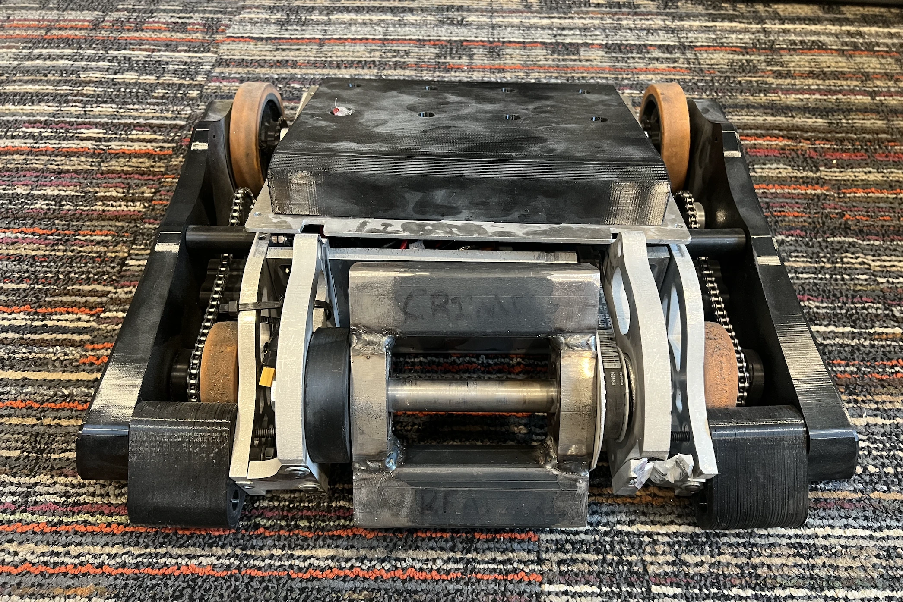
BOULDERBOT
/ NDSU COMBAT ROBOTICS /
CONTEXT
Boulder is a combat robot I led the development of during my junior year (2025-2026) at NDSU.
We competed in
Robobrawl's UIUC XI,
a bracket-style competition where robots are
designed to disable or destroy opponents.
The project is largely a perpetuation of the prior year's work on
Cowbot,
hosting a very similar form factor and hardware. We took the lessons we learned from Cowbot to produce
a more functional, efficient, and competitive battlebot. Additionally, the mentorship I provided through Cowbot
allowed our members more autonomy across systems. In addition to my group lead title, I was the responsible
engineer for our structural assembly. While
Alexander Munson
headed the drivetrain group. He eventually took over as group lead as I departed in the spring of 2026 for a Co-op.
We registered for the 30 lb division and went forward through an 8 month development cycle, which culminated in March 2026. Its namesake comes from the fact that majority of the people on our team were boulderers.
We registered for the 30 lb division and went forward through an 8 month development cycle, which culminated in March 2026. Its namesake comes from the fact that majority of the people on our team were boulderers.
DEVELOPMENT
Our prior experience with
Cowbot,
provided us with valuable considerations:
We were going for a similar form factor to Cowbot, though with more space in the inside for wires, electronics, and other peripherals. We opted for a "tab and slot" approach for the chassis and used the same hardware as Cowbot (2x NEO brushlesss motor and SPARKMAX ESCs) to reduce the cost of the project. 3/8" aluminum was chosen for the chassis as that was the available material the club had in stock. TPU was chosen for the sideskirts to allow for a plastic deformation under impact, helping absorb and dissipate kinetic energy. We prototyped our chassis by using laser cut wood of appropriate thicknesses to do test fits on our internal components.
A new possibility we wanted to explore was the use of a counter-rotating flywheel with its own dedicated motor. Because a vertical spinner generates significant angular momentum, it can introduce undesirable gyroscopic effects during turning, maneuvering, or sudden changes in orientation. By spinning a separate flywheel in the opposite direction, we aimed to partially offset these effects and improve the robot’s stability and controllability without changing the main weapon system itself. We eventually rejected the component as it would introduce unnecessary points of failure for marginal gain.
We built our development workspace in Onshape, which allows multiple team members to simultaneously model on the same project files, as all information is stored online in the cloud. Additionally, Onshape enables modeling through web browsers, opening up the ability for our team to work on almost any platform, regardless of their hardware specifications. Onshape also provides publicly available scripting tools for tasks such as weight reduction.
- More space is needed in the interior volume of the robot.
- Ease of access for maintenance and a simplified top access panel.
- Use TPU instead of UHMW to allow for more complex geometries
- Leverage FEA for more analytical-based weight reduction
- Design for assembly (DFA) should be heavily prioritized to allow for uncompromised maintenance
We were going for a similar form factor to Cowbot, though with more space in the inside for wires, electronics, and other peripherals. We opted for a "tab and slot" approach for the chassis and used the same hardware as Cowbot (2x NEO brushlesss motor and SPARKMAX ESCs) to reduce the cost of the project. 3/8" aluminum was chosen for the chassis as that was the available material the club had in stock. TPU was chosen for the sideskirts to allow for a plastic deformation under impact, helping absorb and dissipate kinetic energy. We prototyped our chassis by using laser cut wood of appropriate thicknesses to do test fits on our internal components.
A new possibility we wanted to explore was the use of a counter-rotating flywheel with its own dedicated motor. Because a vertical spinner generates significant angular momentum, it can introduce undesirable gyroscopic effects during turning, maneuvering, or sudden changes in orientation. By spinning a separate flywheel in the opposite direction, we aimed to partially offset these effects and improve the robot’s stability and controllability without changing the main weapon system itself. We eventually rejected the component as it would introduce unnecessary points of failure for marginal gain.
We built our development workspace in Onshape, which allows multiple team members to simultaneously model on the same project files, as all information is stored online in the cloud. Additionally, Onshape enables modeling through web browsers, opening up the ability for our team to work on almost any platform, regardless of their hardware specifications. Onshape also provides publicly available scripting tools for tasks such as weight reduction.
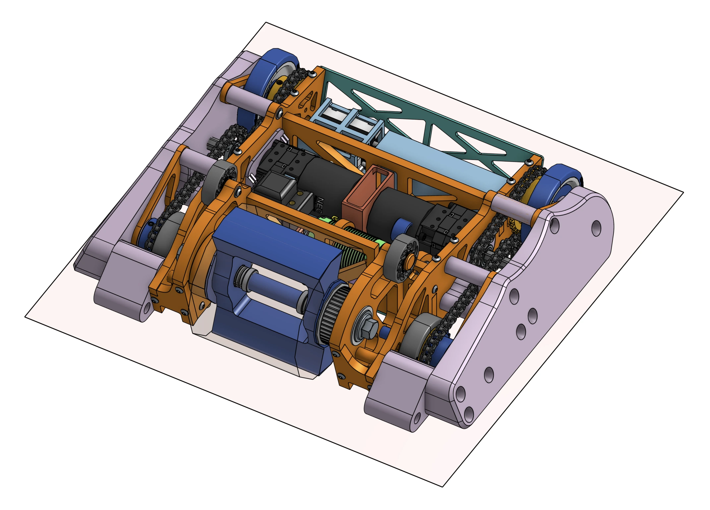
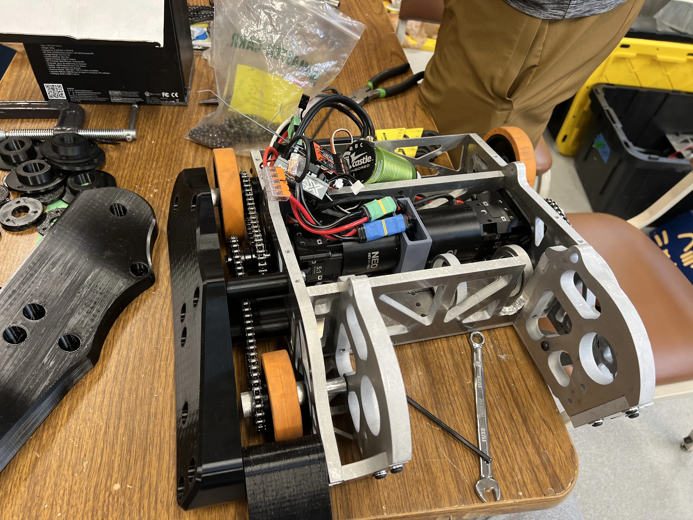
SPECIFICATIONS
- Robot weight: 28.7 lbs
- Weapon type: Vertical modified drum spinner
- Weapon weight: 7 lbs
- Weapon motor: Castle 1515
- Weapon max RPM (theoretical):
- Weapon kinetic energy (theoretical):
- Weapon power delivery: Mamba Monster X 8S
- Drivetrain: 2x NEO brushless V1.1 & 2x SPARK MAX ESC, Chain drive
- Battery: 5S 3600 mAh 18.5V 60C
- Armor: 3/8" Aluminum 6061, TPU, PETG
- Dimensions:
CONCLUSIONS
The robot participated in one elimination match:
One of the most valuable outcomes of this project was the set of lessons we gained throughout the design and build process:
- Match 1 (Loss): Boulderbot suffered a direct impact which sent it over the wall and resulted in an elimination. Damage was sustained to the PETG top plate and front right side of the chassis.
- Match 2 (Forfeit): The second match was forfeited to preserve the robot.
One of the most valuable outcomes of this project was the set of lessons we gained throughout the design and build process:
- Tolerances and manufacturing operations (drilling, tapping, milling, bending, waterjet, EDM, etc.)
- CAD modeling and engineering drawings through Onshape.
- Design for manufacturing (DFM) and design for assembly (DFA) principles, as well as designing for ease of maintenance.
- Material selection, resource management, and accounting for possible failure modes.
- Topology optimization through Ansys workbench.
ACKNOWLEDGEMENTS
GALLERY
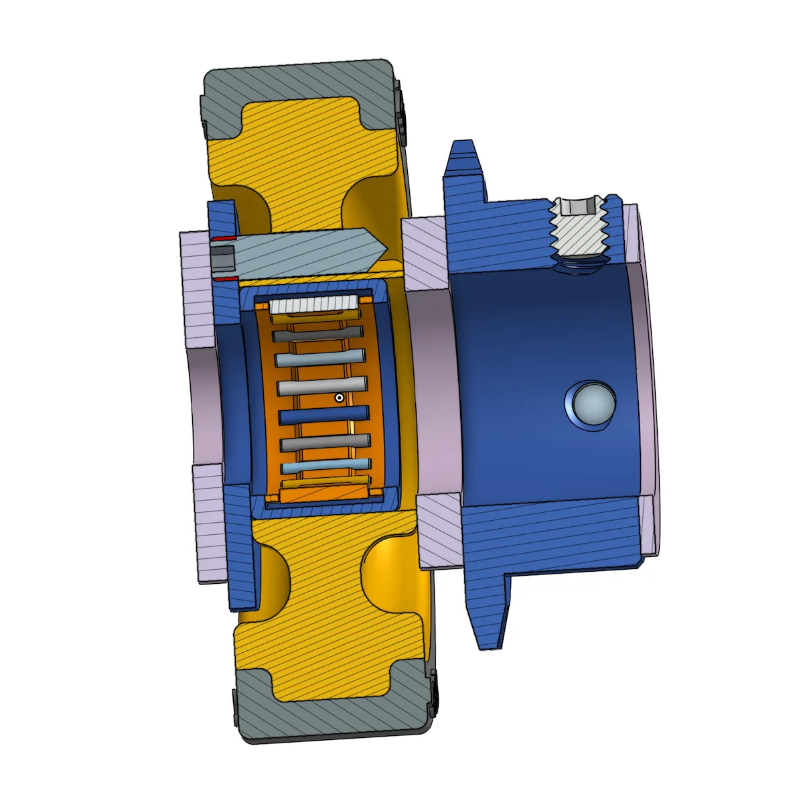
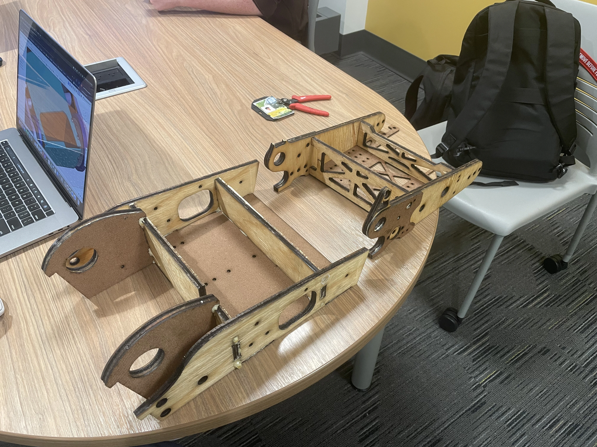
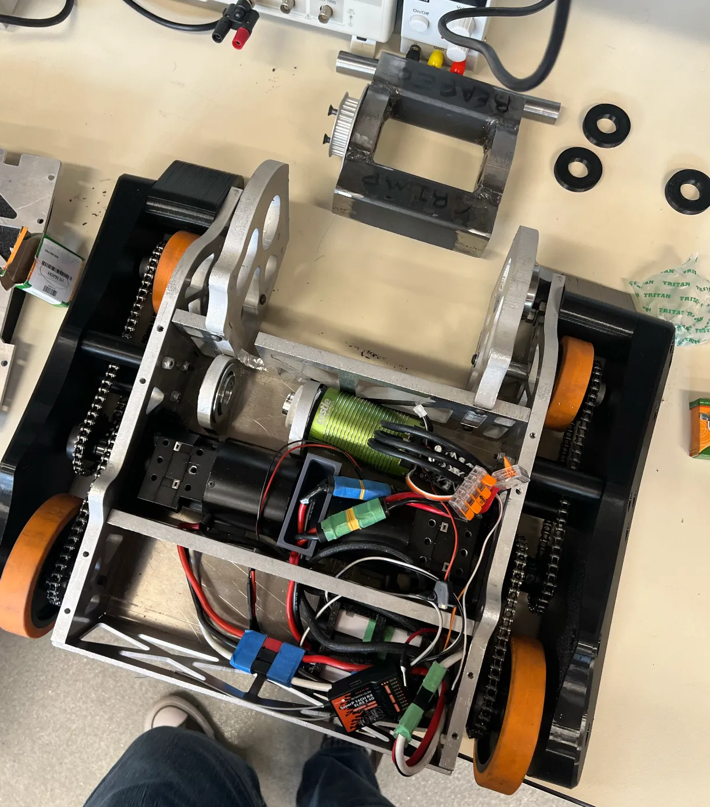
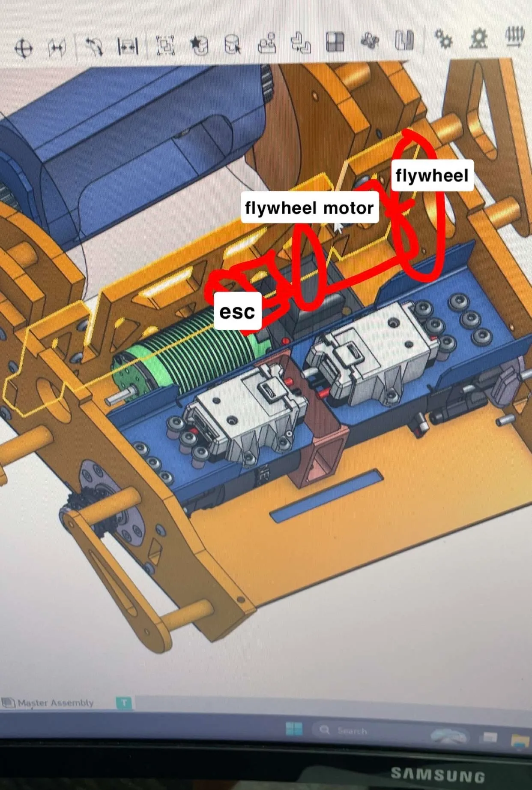
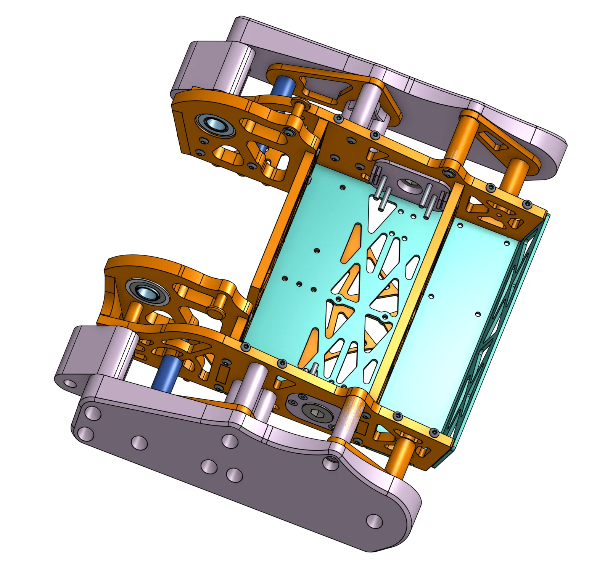
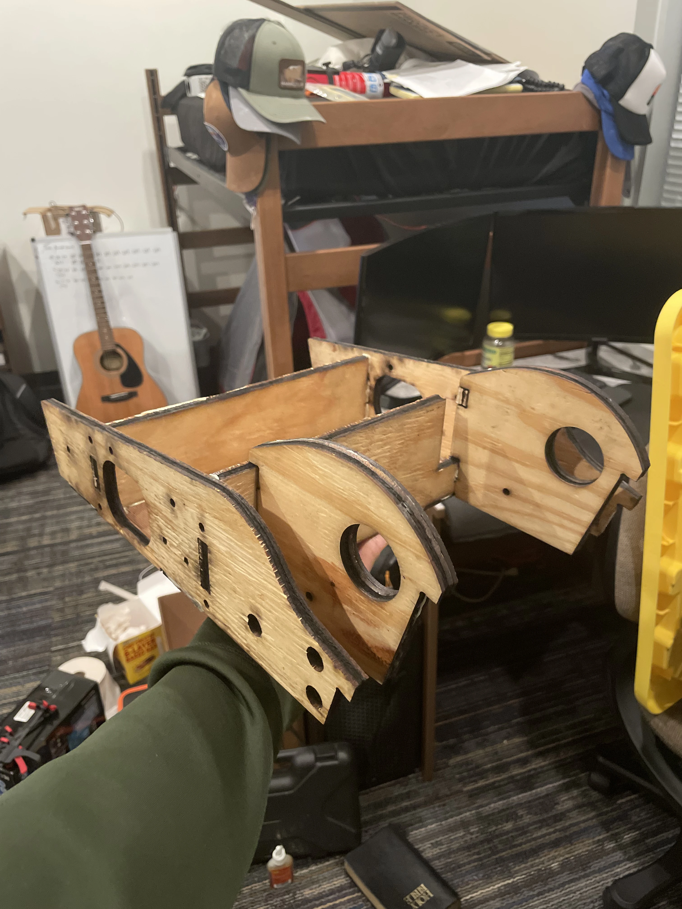
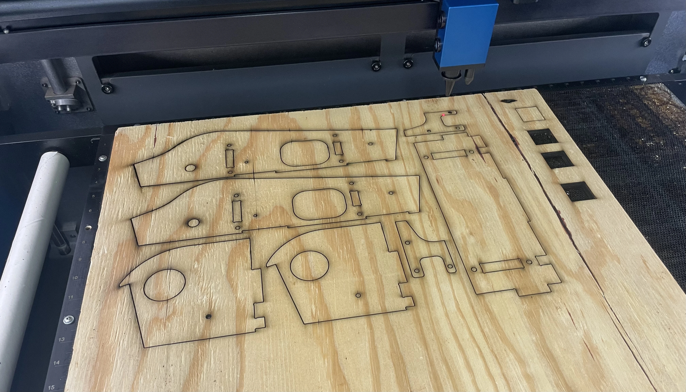
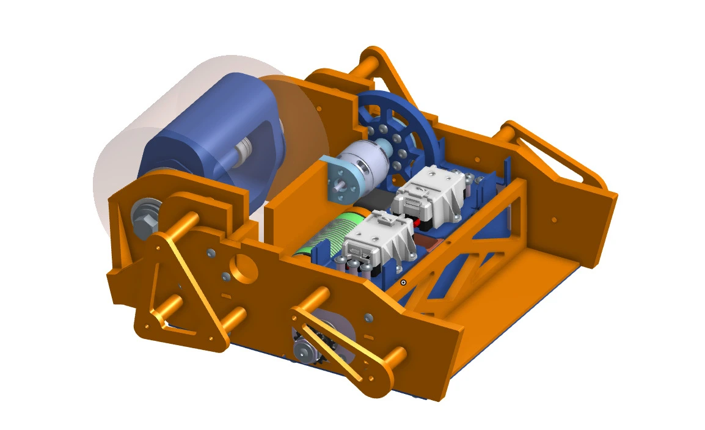
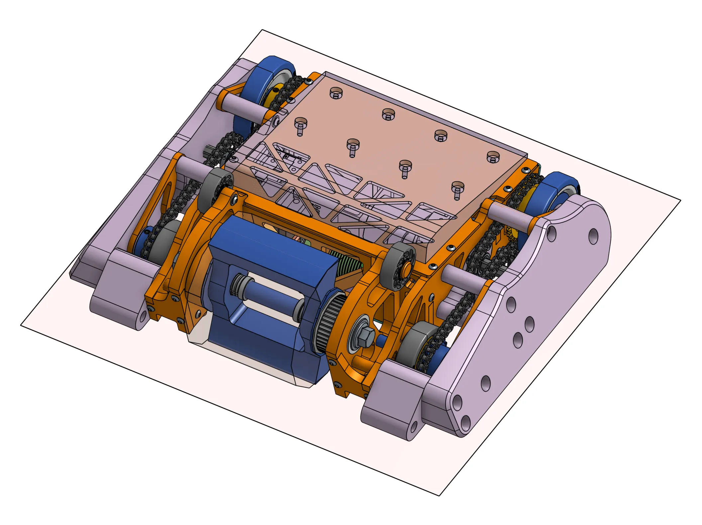
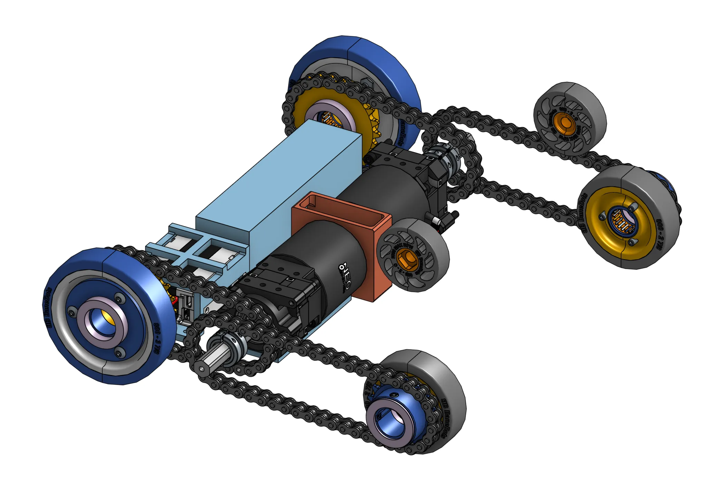
© 2026 Terrence Andre San Gabriel